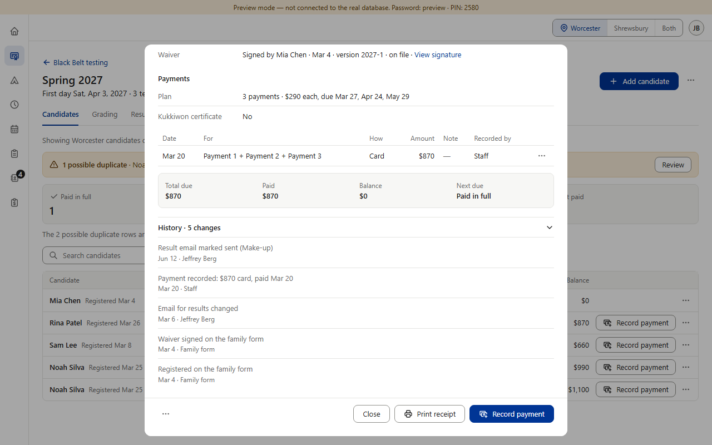
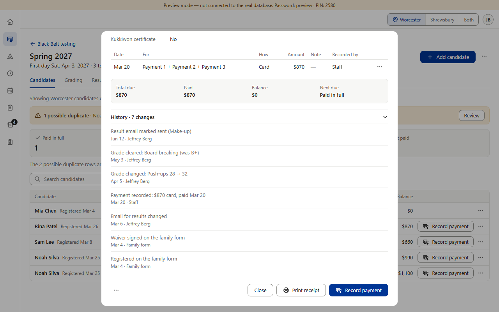

BB8 question · Which grade changes go in the History?
Every grade and extra-points count is logged. A candidate has a grade for every subject on the rubric, so “every grade” means dozens of lines per candidate. Star’s History lists each one as just “Grade changed”, without the subject. Whatever you pick, extra-points counts follow the same rule (“Extra points: Community service 3 → 4”), and a Dan change stays one line.

A · No grades. History = registration, details, waiver, money, result email. Grades live only on the Grading tab.

B · Corrections only (recommended). A grade changed, cleared, or entered again after a clear — with the subject and before → after. A grade’s first entry is left out. A subject later renamed or removed from the rubric shows its old name.
C · Every grade. Every grade entered (here in Star’s style with the subject added) and every correction; the real list runs to dozens of lines.